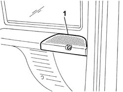
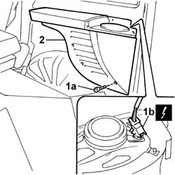

7040H86 parcel rack mounts-fastening
- Path
- Procedures > 70 FITTINGS > 7040 BODYSHELL INTERIOR TRIMS AND FITTINGS > 7040H roof panel lining > 7040H86 parcel rack mounts-fastening
- Kind
- repair procedure (removal / refitting; the operation number is the code)
- Applies to
- all engines; all production periods
- Interactive page
- https://sloeber94.github.io/elrnDB-fDbl/en/#/2585152
Applies to: all engines; all production periods; only with equipment: Doblò trim level
 Removing
Removing
 Refitting
RefittingDisconnect the battery negative terminal.
Op. 7040H80 REAR PARCEL SHELF - R.R.
1. Remove the plastic protection for the rear speaker.

Applies to: all engines; all production periods; only with equipment: Doblò trim level
1. Undo the fixing bolts (1a) and disconnect the electrical connector for the speaker (1b).
 | Name | Connector |
|---|---|---|
1b | Rear left loudspeaker (in parcel shelf) |
| Name | Connector |
|---|---|---|
1b | Right rear speaker (in parcel shelf) |
2. Remove the mounting.

Applies to: all engines; all production periods; only with equipment: Doblò trim level
Carry out the same operations for the remaining support.
Applies to: all engines; all production periods; only with equipment: Doblò trim level
Refitting
RemovingConnect the electrical connector for the speaker.
| Name | Connector |
|---|---|---|
- | Rear left loudspeaker (in parcel shelf) |
| Name | Connector |
|---|---|---|
- | Right rear speaker (in parcel shelf) |
Fit the support and secure it using the bolts.
Fit the protection for the speaker.
Op. 7040H80 REAR PARCEL SHELF - R.R.
Connect the battery negative terminal.
Topics linked from this page (3)
Topics that link to this page (9)
- 5505B40 wiring built into load compartment right rear door flap r r
- 5505B42 wiring built into load compartment left rear door flap r r
- 5505C41 cabin wiring - r r
- 5540A42 tail light panel one left or right r r
- 5580H06 WIRING FOR PARKING SENSOR SYSTEM - R.R.
- 5580H10 PARKING OBSTACLE DETECTION DEVICE ELECTRONIC CONTROL UNIT - R.R.
- 7020E14 rear door flap hinge - r+r
- 7210E68 rear bumper - side element
- 7210L25 (ONE) REAR SWING DOOR - R.R.